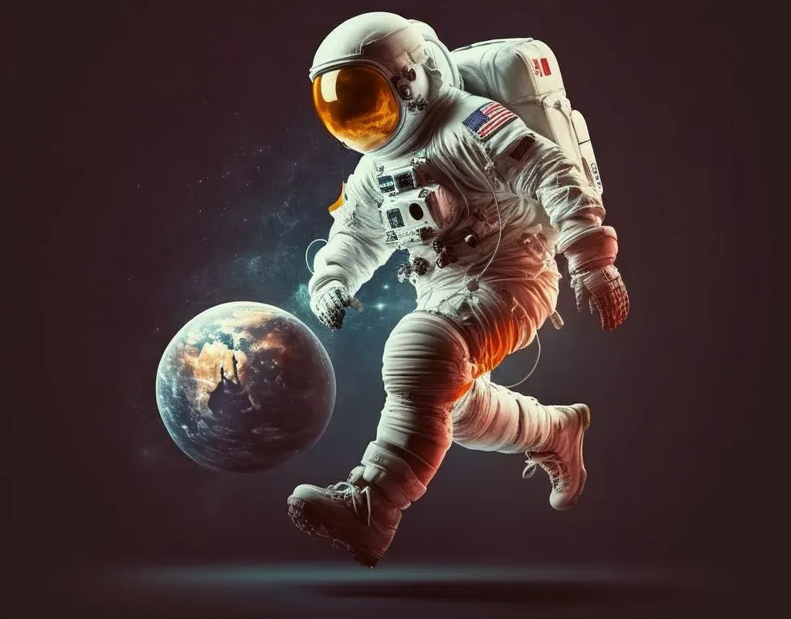
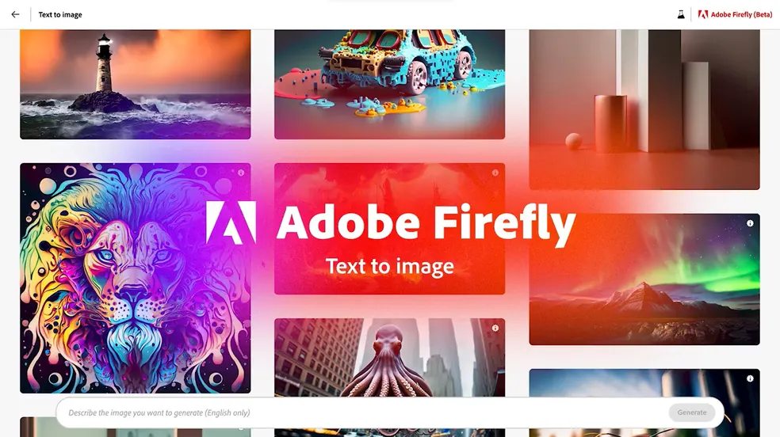

8 sites que criam imagens com Inteligencia Artificial
A inteligência artificial (IA) nos últimos anos tem revolucionado o mundo, e a criação de imagens não seria diferente. Sendo capaz de aprender e imitar padrões, agora a IA criar imagens é capaz de produzir imagens similares às feitas por humanos.
Isso torna o processo de criação de imagens mais rápido, eficiente e acessível. Se você está procurando ferramentas para criar imagens utilizando a inteligência artificial, separamos uma lista com as melhores IA para criar imagens.
1.DALL-E
Desenvolvido pela OpenAI, a mesma empresa por trás do ChatGPT, o DALL-E 2 (https://openai.com/dall-e-2) é um dos sites mais populares para a criação de imagens com inteligência artificial. Com a ferramenta, os usuários podem gerar imagens a partir de descrições de texto simples, como "um elefante rosa segurando um guarda-chuva" ou "um sapato com estampa de leopardo".
O algoritmo do DALL-E 2 consegue interpretar essas descrições e gerar imagens precisas e realistas, já que utiliza uma rede neural capaz de identificar padrões nas descrições e de representá-los graficamente. Além disso, os usuários podem ajustar vários parâmetros para personalizar ainda mais as imagens geradas, como a resolução, o brilho e a saturação.

2.Midjourney
O Midjourney é outro gerador de imagens com IA mais popular do mercado. Considerada uma das plataformas mais promissoras para IA criar imagens, ganhando manchetes quando um de seus usuários ganhou um concurso de belas artes utilizando uma imagem criada com o software.
Diferente de outras ferramentas, o Midjourney é operado através de um servidor do Discord e utiliza comandos de bot Discord para criar imagens de alta qualidade em um estilo bem artístico. Os usuários conseguem adicionar um prompt de texto para criar imagens originais.
O Midjourney é grátis, mas tem algumas limitações nessa modalidade: as imagens geradas não podem ser usadas para fins comerciais, por exemplo. Já com os planos pagos, que custam desde US$ 10 (R$ 50,37) até US$ 60 (R$ 302,20) por mês, é possível gerar imagens livres para uso e com muito mais velocidade.
3.Bing Image Creator
O Bing Image Creator (https://www.bing.com/create) é uma ferramenta da Microsoft que oferece uma ampla variedade de recursos para os usuários gerarem imagens a partir de palavras-chave específicas. Ao utilizar inteligência artificial, o Bing Image Creator é capaz de vasculhar a web e encontrar imagens relevantes, que podem ser combinadas para criar produções visuais originais.
Essa ferramenta pode ser útil para quem precisa de imagens específicas, que não são facilmente encontradas em bancos livres na Internet. O Bing Image Creator oferece uma ampla gama de opções de personalização, que permitem que os usuários ajustem a cor, o tamanho e a até a posição das imagens. É possível utilizar o Bing Image Creator tanto pelo PC quanto pelo celular Android e iPhone (iOS).
4.Craiyon
Anteriormente chamado de DALL-E mini, o Craiyon é outra opção de ferramenta para IA criar imagens disponíveis online. A ferramenta é totalmente gratuita e acessível para qualquer usuário, basta inserir o texto para que a IA crie sua imagem.
Entretanto, para baixar as imagens que você cria no Craiyon é necessário capturar a tela ao invés de baixar um arquivo. Apesar de não ser o sistema mais moderno, o Craiyon é um gerador de IA não filtrado e divertido que pode ser facilmente acessado por qualquer pessoa.
5.NightCafe
O NightCafe (https://nightcafe.studio/) é outra plataforma online que permite gerar imagens personalizadas a partir de palavras-chave e ajustes manuais. A plataforma utiliza inteligência artificial para encontrar imagens relevantes na web e ainda conta com opções de edição para que os usuários possam personalizar seus resultados.O nome da ferramenta é uma referência a pintura de Vincent Van Gogh, The Night Café.
É possível gerar imagens com inteligência artificial generativa totalmente de graça com o NightCafe. Fotos com mais qualidade e detalhes, por sua vez, custam créditos, mas todos os usuários ganham uma quantidade limitada de créditos diariamente. A única cobrança da plataforma ocorre quando o usuário solicita a impressão de uma das artes.
6.Dream by Wombo
O Dream by Wombo é uma plataforma com versão web e aplicativo para celulares Android e iPhone (iOS) que utiliza inteligência artificial para transformar fotos em imagens surreais e psicodélicas. O app é capaz de aplicar diversos efeitos, como transformar cores, aumentar contrastes, adicionar texturas e muito mais. Tudo isso é possível graças às técnicas de processamento de imagem e algoritmos avançados utilizados pelo aplicativo.
Além disso, o Dream by Wombo oferece diversas ferramentas para personalização da imagem, permitindo que o usuário escolha exatamente como quer que sua foto seja transformada. É possível, por exemplo, ajustar a intensidade dos efeitos, escolher entre diversos filtros e até mesmo adicionar elementos e desenhos à imagem.
Outra característica interessante do Dream by Wombo é que ele permite a criação de GIFs. Com essa funcionalidade, os usuários podem dar vida às suas fotos e compartilhá-las nas redes sociais de uma forma ainda mais divertida e criativa. É possível utilizar o aplicativo de graça, com algumas limitações. A versão paga funciona por meio de uma assinatura de US$ 9,99 (R$ 50,32) por mês, mas também dá para adquirir o plano vitalício por um pagamento único de R$ 169,99 (R$ 856,17).
7.StarryAI
O StarryAI (https://starryai.com/) é outro site e aplicativo para Android e iPhone (iOS) que utiliza IA para criar imagens em alta qualidade. A ferramenta disponibiliza uma ampla gama de opções de personalização, permitindo que os usuários criem imagens bastante únicas. Eles podem escolher o tamanho da foto, a cor, a resolução e outras opções de customização para garantir que a ilustração se adapte às suas necessidades.
Além disso, um diferencial da plataforma é a possibilidade de ser usada por estudantes, professores e entusiastas da astronomia que desejam aprender mais sobre o universo e criar imagens astronômicas de alta qualidade para uso educacional.
É possível usar o StarryAI de graça. Por mais que as imagens custem créditos, a plataforma oferece cinco créditos diários e mais créditos quando o usuário assiste a vídeos ou compartilha posts nas redes sociais. Há ainda um plano Pro que custa a partir de R$ 66,90 por mês e oferece desconto em créditos, upscaling de imagens e bloqueio de anúncios.
8.Adobe Firefly
O Adobe Firefly é a ferramenta desenvolvida pela Adobe para competir os outros geradores de imagens desta lista. O software, até o momento, só está disponível em versão beta — sendo preciso entrar em uma fila para receber um convite da empresa para utilizá-lo. A característica que o distingue dos demais sites geradores é que, segundo os desenvolvedores, o Adobe Firefly utiliza apenas conteúdos licenciados para alimentar seu algoritmo.
